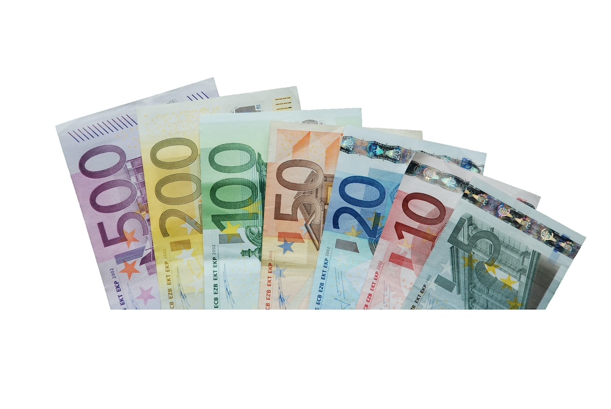
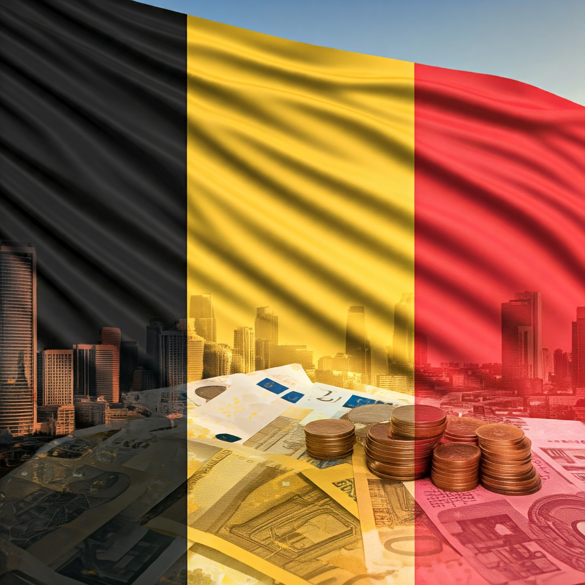

Belgium |
Economy |
| home |
gallery |
accomplishment |
contact |
The economy of Belgium is a highly developed, trade-dependent, mixed economy. Key features include: |
| GDP: In 2022, Belgium's GDP reached approximately 552 billion euros, with exports accounting for over 80% of GDP. |
 |
Strategic Location: Belgium benefits from its central location in Western Europe, world-class ports like Antwerp, and a well-integrated logistics network. |
|  |
Since January 1, 1999, the official currency of Belgium has been the euro (€), the same one used in most European Union countries. |
The Belgian franc was the currency of the Kingdom of Belgium from 1832 until 2002 when the euro was introduced. It was subdivided into 100 subunits, each known as a centiem in Dutch, or centime in French and German. |
| Historically, Belgium’s national prosperity was mainly dependent on the country’s role as a fabricator and processor of imported raw materials and on the subsequent export of finished goods. The country became a major steel producer in the early 19th century, with factories centred in the southern Walloon coal-mining region, particularly in the Sambre-Meuse valley. Rigorous monetary reform aided Belgium’s post-World War II recovery and expansion, particularly of the Flemish light manufacturing and chemical industries that developed rapidly in the north, and Belgium became one of the first European countries to reestablish a favourable balance of trade in the postwar world. |
 |
| The Belgian government intervened to reactivate the industry through subsidies, tax incentives, and attracting foreign investment, with moderate results but at the cost of a large public deficit and external debt. In the 1980s and 1990s, it implemented stricter policies and reduced social subsidies, managing to decrease debt and, at the beginning of the 21st century, balance the budget and diversify social security funding. At the regional level, Flanders has concentrated more investment and employment, especially in services, while Wallonia continues to face greater problems due to deindustrialization, despite state incentives. |
|  |
 |
| Copyright 2026 Mafer, Medel, Gallo, Mehir, Damian, Paola © |